さて、いよいよメインのエリアである。
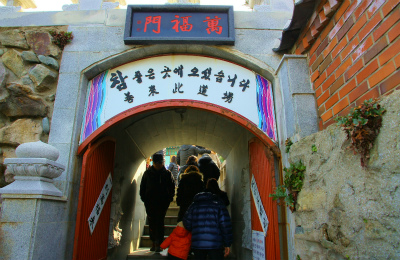
海を臨む素晴らしいロケーションだ。
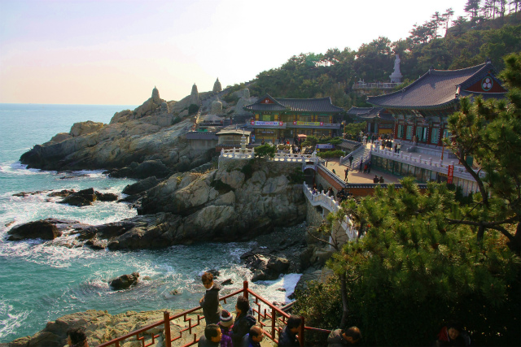
このような辺鄙な海岸に観音菩薩は龍に乗って現れるのだという。
原田直次郎の名画「騎龍観音」を例に出すまでもなく、荒い波間に龍が現れ、その上に観音菩薩が乗っているというイメージは広く共有されている。
で、その本堂。
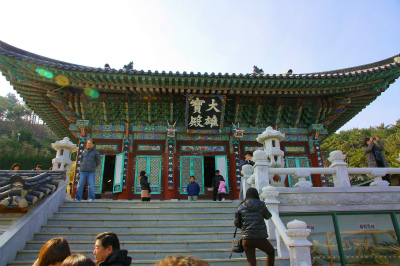
大雄寶殿という。
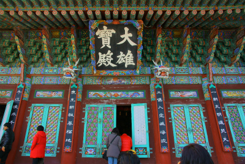
いかがであろう、このカラーリング。
我々が頭に描く韓国の仏教寺院そのものといえよう。
ため息が出るような美しい組み物。
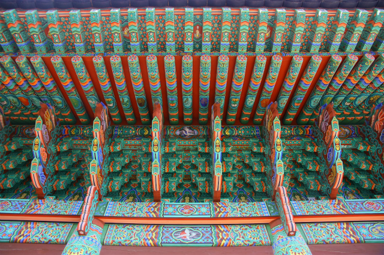
組み方自体もさることながらその構造をさらに緻密な絵柄が分割していく。
このミントグリーン。世界中の仏教寺院でこの色をふんだんに使っているところなどこの国だけではなかろうか。
独特で、凄くカッコいい。
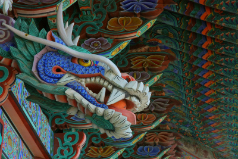
どこかマレーシアのプラナカン様式、ババニョニャ様式をも思わせるビビッドでそれでいて細やかな色使いだ。
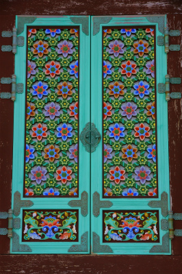 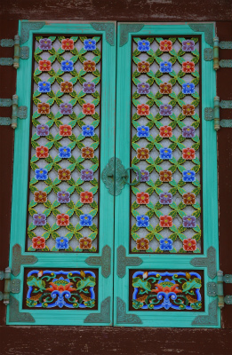
窓枠や欄間などにこの国独自の美意識が伺える。
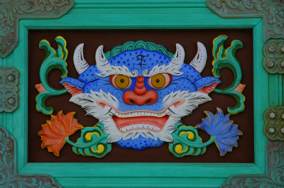 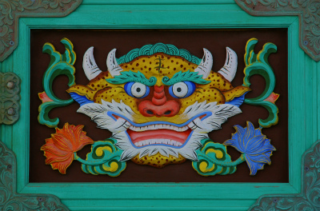
堂内は中国風だが内側にも組み物があってしかもバッチリペイントしてあるところが凄い。
建物が表裏逆転したような、建物の内側にネガティブな建物があるような不思議な感覚。
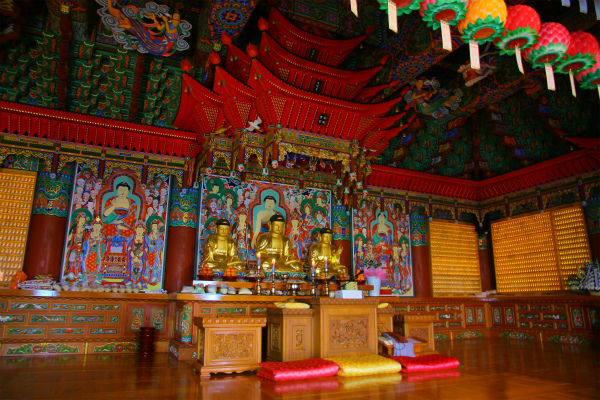
本尊は釈迦三尊像。この辺はいわゆる大乗スタンダードですね。
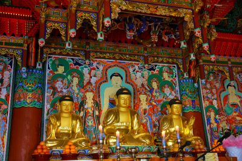
本堂のとなりには中国からやってきた金ピカ弥勒像。お顔はチョット邪悪気味だが中々立派だ。
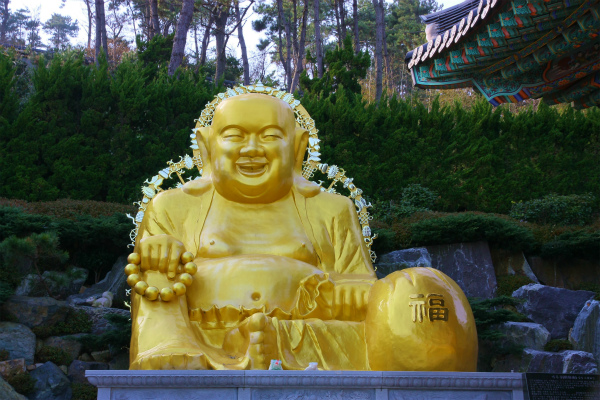
光背の飾り物がどっかのシルバー屋か！というくらい凄いことになってる。
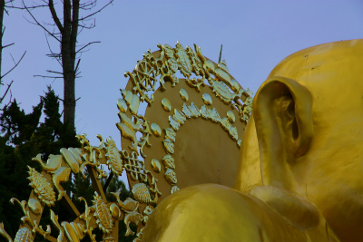
隣には龍神を祀る龍宮壇。
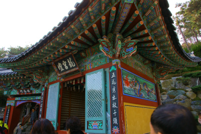
ここはそもそも龍王のお告げによって創建された寺なので、龍との縁は深い。
↓中央が龍神である。
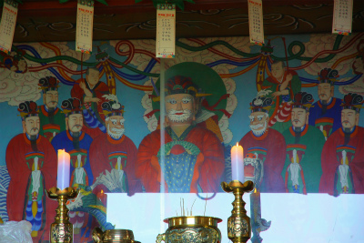
印象的だったのはこの提灯。
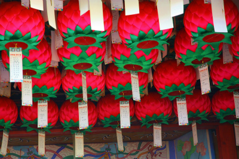
大雄寶殿にもあったが、逆さイチゴ畑状態。
ほかにもあちこちは派手な提灯がぶら下がっていた。
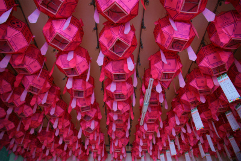
火を灯すまでもなく、昼でも充分派手ですね。
大雄寶殿や龍宮壇の前はやや広くなっており、海を眺める絶好のビューポイントとなっている。
そんな一画に龍がのた打ち回ってる。

↑こうしてみるとかなり大きそうだが、実際のサイズは↓こんな。

問題はその下にあるプチプチしたものなのだ。
何と、小坊主の人形が密生したキノコのごとく奉納されているのであった。
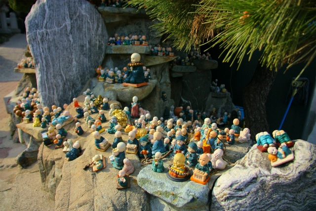
４頭身のチビッコ坊主たちが思い思いのポーズをしている。
一見かわいいが、見れば見るほど何とも異様な光景である。
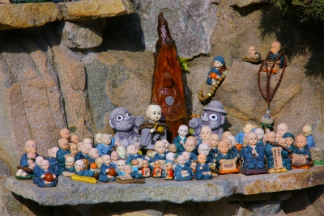
舌を出し、雄叫びをあげそうな恐ろしい龍とキュートな小坊主人形の落差ったら。
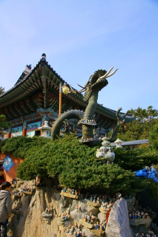 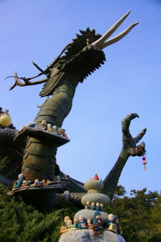
それにしてもこの数珠、どうやってつけたんだろう?
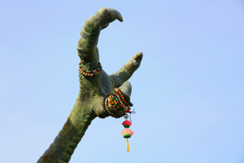
小坊主人形は日本でもたまに見かける甘えん坊主は少なく、机に書を広げて勉強しているタイプが多い。
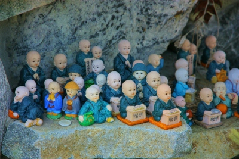
学業成就、ということなのか。
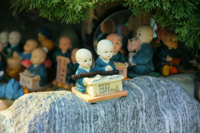
中には怠け者もいたり。
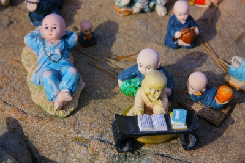
勉強したり、サボったり、修行したり、甘えたり…それにしても種類が多い。
この人形、大雄寶殿下の売店にお守りなどと一緒に売られていたが、精々数種類。
それ以外は奉納者がそれぞれ持ち寄ったものと思われる。
韓国小坊主人形界の奥深さに新鮮な驚きを感じた。
どこかに小坊主専門ショップなどがあるのだろうか？
龍の首の周りにもぐるりと一周している。寝そべってますねー。
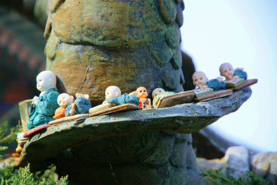
龍の前には何故か金の豚が二頭。意外と人気だった。
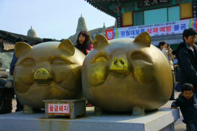
お釈迦サマに甘茶を掛けるコーナー。
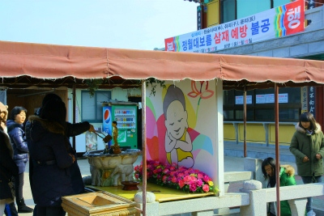
その裏側は階段になっている。
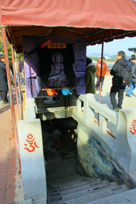
降りてみると、小ぶりな地下窟だった。薄暗い中、頼りないロウソクの炎がゆらめいていた。
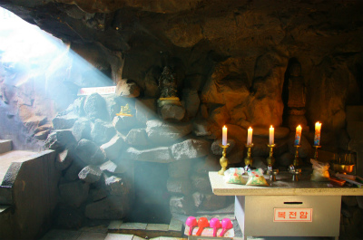
休憩所で一休みしてから先ほどの龍宮壇の隣にある門を潜り、石段を上る。
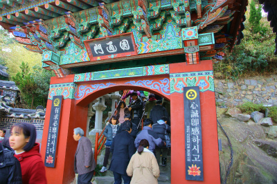 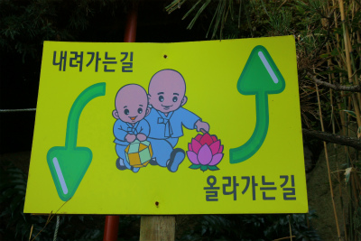
上りきるとそこには石の観音像が立っていた。
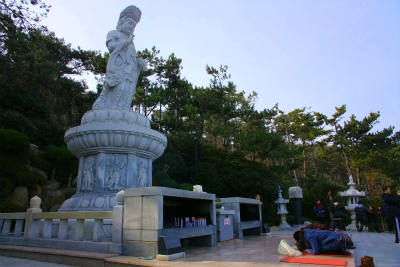
海水観音大仏である。1999年建立。
高さは数メートルだが、これもまた出来が良い。この国の石彫レベルの高さを如実に物語っている。
大観音の前には参拝用のカーペットが敷かれ、参拝者が次から次へと拝んでいた。
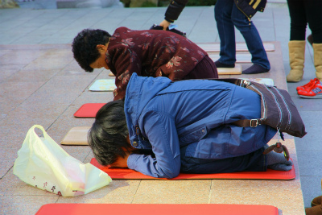
ここにはタイの田舎やミャンマー、スリランカで見たような、純粋な信仰に生きる人々とはまた違った信仰風景があった。
神なき世界を生きるために神仏を頼る。そんな二律背反の難しい世界を生き抜くための祈りのように思えてならなかった。
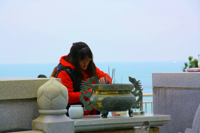
釜山港の鉛色の海とは違い、青く開放感がある。
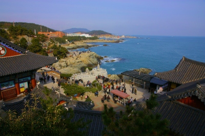
奥には石積みの蟻塚のような仏塔（?）が複数あったが、近づくことは出来なかった。残念。
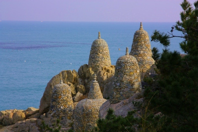
てなわけで釜山屈指の名刹龍宮寺の参拝はお終い。
古刹なのだが、寺自体は近年整備されたので歴史はあまり感じられなかったが、釜山の現在進行形の仏教のアウトラインだけは何となく把握できたかな。ま、それで充分です。
あ、さっき大観音の前で拝んでたオバちゃん〜。
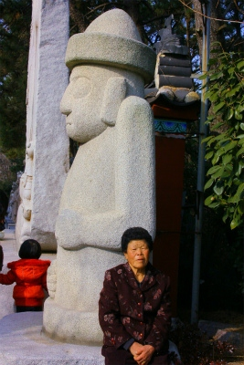
トルハルバンの隣に座ってすっかり放心モード。
かなり激しく拝んでたもんねー。
次の修行へＧＯＧＯ！
釜山珍寺大作戦